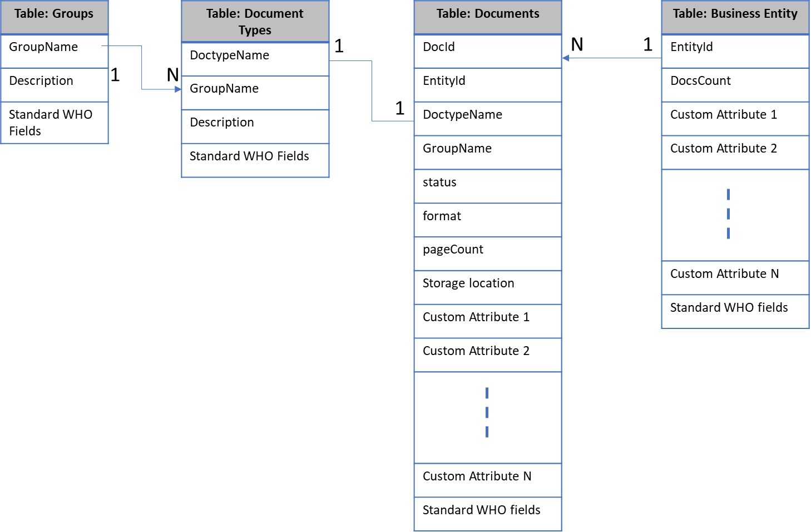

Posted on April 17, 2021
Recently, I started working on developing a base platform for document-based workflow and automaton services using serverless technologies. One of the requirements is massive scalability of the system with consistent performance. Like any web application, we needed to make a technical choice on the database at two levels, (a) sql or nosql (b) specific database based on the first-choice selection. This article is about sharing my thought process on the selection for the specific use case of ours. This article is based on AWS offerings as author is more familiar with AWS platform (and certified AWS solution architect).
This article has the following areas if you would like to jump back and forth instead of reading as one single item.
Note, Table and collection are used interchangeably to refer to table. Row and item is used interchangeably to refer to one row in the table.
This usecase is about developing a base document platform which is scaffolding to develop further pay-per-use features.
The main use case requirements are as below.
Documents are associated with a business entity.
Business entity can be anything depending on the domain.
Example, in case of accounting firms, person/company id is the business entity to which documents belongs to.
Example: In case of a legal firm, client id is the business entity where documented associated with given clients are organized.
Example: in case of loan origination, loan id is the business entity where related documents are attached.
Each document has type associated with it.
Optionally, document type is associated with a group.
All remaining attributes of business entity or document or document type should be configurable per customer need.
Each business entity and document both have status which would drive the atomic business flows that depend on documents.
Base platform above can be extended by automated workflows which are specific. Example on one such flow is extracting the data from documents and integrating back with customer systems. These flows come with built-in task management capabilities for queueing and picking up the task and monitoring the work queues. In summary, these extended flows may add more attributes the core entities or they may have separate items/tables defined which depend on core entities.
Main comparison criteria between SQL and NoSQL [Here are few references (a). AWS re:invent 2019 &(b). AWS re:invent 2020 Part 1 & Part 2 (c). . AWS DynamoDB Developer Guide (d). Another article that describes more about NoSQL DynamoDB] are listed below for convenience reference. Table 1 below is taken directly from the references listed above.
Table 1: Why NoSQL?
|
Why NoSQL? |
|
|
SQL |
NoSQL |
|
Optimized for Storage |
Optimized for Compute |
|
Normalized/Relational |
Denormalized/hierarchical |
|
Ad Hoc Queries |
Instantiated Views |
|
Scale Vertically |
Scale Horizontally |
|
Good for OLAP |
Built for OLTP at scale |
Coming back to the requirements, there are few key things that makes NoSQL better choice for the use case above.
Dynamic Schema (or schemeless approach)
Dynamic schema flexibility is important differentiating factor as per the use case. All we know from use case is that
We have core entities which can be identified by unique keys either provided by customer or generated.
Relationship between core entities.
Rest of the attributes are configurable by the customer.
These attributes vary from customer to customer.
DynamoDB tables are schemaless, except for the primary key, so the items in a table can all have different attributes, sizes, and data types. The simple relational equivalent of the schema looks as below for the base document platform.

Scalability and Performance
Other critical requirements is that database should provide consistent response time at any scale ( One good reference on the scalability and performance).
This has been important design consideration for two reasons.
Customer experience
Cost (As mentioned earlier, our plan is to go serverless full stack. Cost of serverless infra goes higher if the memory, compute and execution time are not under control).
AWS DynamoDB provides single digit millisecond performance if the data is modelled properly within its boundaries and limits.
Every major architectural decision has pros and cons and has some consequences on how you design and implement the rest of the system. Decision to go with NoSQL has the following consequences which I would elaborate in detail further.
NoSQL Design Approach
No complex joins and queries.
Atomicity of the transactions.
Referential Integrity
Aggregations
Sorting
Pagination
As far as which vendor to go with, given that we are using AWS as cloud platform and it serverless features, it would be easier to go with DynamoDB. MongoDB also offers managed services.
AWS offers DynamoDB with some very interesting capabilities (which otherwise requires resources with deep expertise) as below.
DynamoDB is fully managed, NoSQL database that provides fast and predictable performance with seamless capability. Here is (Amazon's Dynamo whitepaper) one good reference to the origins of DynamoDB
Supports semi-structured and unstructured data
Supports both document and key-value data
It has flexible schema (sometimes referred as schema-less)
It uses HTTPS as transport
Unlimited scaling without downtime or performance degradation
Provided single digit milliseconds latency at any scale
It has multi-region and multi-master features.
It is durable database and has built-in backup and restore, in-memory caching and security features.
Click here to view the DynamoDB developer guide which has detailed explanations. Let us dive deeper into each of the areas that are consequences of decision to go with NoSQL.
The following are the DynamoDB limits, as of Apr-2021
An individual record in DynamoDB is called an item, and a single DynamoDB item cannot exceed 400KB.
Page Size limit 1 MB on Query and Scan data
DynamoDB has two APIs for fetching a range of items in a single request. The Query operation will fetch a range of items that have the same partition key, whereas the Scan operation will fetch a range of items from your entire table.
For both of these operations, there is a 1MB limit on the size of an individual request. If your Query parameters match more than 1MB of data or if you issue a Scan operation on a table that’s larger than 1MB, your request will return the initial matching items plus a LastEvaluatedKey property that can be used in the next request to read the next page.
DynamoDB supports your access patterns using the throughput that you provisioned as long as the traffic against a given partition does not exceed 3,000 RCUs or 1,000 WCUs.
Let us dive deeper into each (of the areas identified as consequences of decision to go with DynamodB above) that has impact on the rest of the application/product design and implementation.
Please refer to the link
from Dyanmo DB Developer Guide for more details. There are two
key concepts in NoSQL Design.
Design
approach
Concept 1: The first step in designing your DynamoDB application is to identify the specific query patterns that the system must satisfy.
Identify the application access patterns and it properties as below
Data size: Knowing how much data will be stored and requested at one time will help determine the most effective way to partition the data.
Data shape: Instead of reshaping data when a query is processed (as an RDBMS system does), a NoSQL database organizes data so that its shape in the database corresponds with what will be queried. This is a key factor in increasing speed and scalability.
Data velocity: DynamoDB scales by increasing the number of physical partitions that are available to process queries, and by efficiently distributing data across those partitions. Knowing in advance what the peak query loads will be might help determine how to partition data to best use I/O capacity.
Concept 2: Organize your data according to general principles that govern performance
Keep related data together:
Instead of distributing related data items across multiple tables, you should keep related items in your NoSQL system as close together as possible. As a general rule, you should maintain as few tables as possible in a DynamoDB application.
Use Sort order
Related items can be grouped together and queried efficiently if their key design causes them to sort together. This is an important NoSQL design strategy.
Distribute queries
you should design data keys to distribute traffic evenly across partitions as much as possible, avoiding "hot spots."
Use global secondary indexes
By creating specific global secondary indexes, you can enable different queries than your main table can support, and that are still fast and relatively inexpensive.
Let us take our relational schema presented in
Fig. 1 as the use case to model in DynamoDB using single table design
approach. Here are references to few articles (reference
article 1, reference
article 2, ) that details about the table design in DynamoDB.
Data
access patterns
The below are the read access patterns for the use case above.
Table 2: Read Access Patterns
|
Sl. No |
Access Pattern |
|
1 |
Get all the group names |
|
2 |
Get all the document types |
|
3 |
Get a business entity by its ID |
|
4 |
Get a document by its ID |
|
5 |
Get all the document associated with a given business entity |
|
6 |
Get all the document associated with a given business entity by document status |
|
7 |
Get all the document associated with a given business entity by document type name |
|
8 |
Get all the document associated with a given business entity by group name |
|
9 |
Get all business entities |
|
10 |
Get all documents (across business entities) for a given document status |
The primary key that uniquely identifies each item in an Amazon DynamoDB table can be a simple (a partition key only) or composite (a partition key combined with a sort key). For more details on how to design partition key, refer to developer guide. The following table describes the keys for our table for different data shapes.
Table 3: Entities and their PK (Partition key), SK (Sort Key)
|
Entity |
PK |
SK |
Reamarks |
|
Group |
“groups” |
Group Name |
|
|
DocumentType |
“doctypes” |
Doc Type Name |
|
|
Business Entity |
Business Entity Id |
“entity” |
|
|
Document |
Business Entity Id |
Doc#<document id>:lm#<date>:status#<status> |
|
Note, intentionally, I am using keyword “groups” as PK for both Group and “doctypes” keyword for DocumentType items. These are lookup tables and expected to have anywhere from single digit rows to couple of hundred rows at the max. I would like DynamoDB to keep these in one partition/shard than spreading across multiple shards/partitions.
In our use case, business entity Id is unique and is entered/managed by customer. Document id is generated something like uuid.
This key design fits well as it keeps the business entity and its related documents together in one partition. We do not expect the business entity and its documents exceed the 10 GB partition size. If there are more business entity’s are added based on customer volume, DynamoDB should be able to increase the partitions appropriately.
Well, our product feature is for customers to add attributes to the core entities, application must need to make sure that this configuration does not cross the another DynamoDB limit that item (row in a table) does not exceed 400 KB size limit.
Fig 2: Single Table Design for the schema represented in Fig 1
The above single table design looks weird compared to the relational schema. But under the hood you are saving data in a format that would be faster for fetching real-time. Taking directly from the “DynamoDB Developer Guide” link
“Data shape: Instead of reshaping data when a query is processed (as an RDBMS system does), a NoSQL database organizes data so that its shape in the database corresponds with what will be queried. This is a key factor in increasing speed and scalability.”
Well, is the single-table design is only option we have in NoSQL modelling? There is one another alternative than single table design that is having separate tables and use graphql which gets the data for you from multiple tables based on the graphql schema. But irrespective of single table or multi-table, you must design these based on the access patterns.
I did not consider using graphql approach is that (a) use case requires to have flexible schema (custom attributes) where customer configures the attributes and uses. It is not clear to me how to go about doing this in graphql when your attributes are not defined ahead. (b) I might have to add additional secondary indexes based on the custom configuration of the attributes/usage based on customer needs.
Table 5: Query Conditions for the access patterns from Table 2.
|
Sl. No |
Access Pattern |
Query Conditions |
|
1 |
Get all the group names |
Use PK = “groups” |
|
2 |
Get all the document types |
Use PK = “doctypes” |
|
3 |
Get a business entity by its ID |
Use PK = <entity ID> and sk = “entity” |
|
4 |
Get a document by its ID and business entity |
Use PK = <entity ID> and SK = begins_with(doc#document id) |
|
5 |
Get all the document associated with a given business entity |
Use PK = <entity ID> |
|
6 |
Get all the document associated with a given business entity by document status |
Use PK = <entity ID> and SK = contains(status:<status>) |
|
7 |
Get all the document associated with a given business entity by document type name |
Use PK = <entity ID> and SK = contains(documenttype:<type>) |
|
8 |
Get all the document associated with a given business entity by group name |
Use PK = <entity ID> and SK = contains(group:<group name>) |
|
9 |
Get all business entities |
Use GS1 SK = “entity” |
|
10 |
Get all documents (across business entities) for a given document status |
Use GS1 PK = contains(“status#<status>”) |
|
11 |
Get all documents (across business entities) for given Document type name |
Not used access pattern |
|
12 |
Get all documents (across business entities) for given group name |
Not used access pattern |
One need to understand how the global secondary indexes and local secondary indexes work. If you query or scan a global secondary index, you can only request attributes that are projected into the index. Global secondary index queries cannot fetch attributes from the parent table.
Joins and complex queries are not supported. We
have modelled 1:N and 1:1 relation in the single table above. If you
need reports and other analytics which require joins, it would have
to be managed separately.
Complex
joins or queries
For our product, reporting is a requirement when the task management is enabled. Our plan is to use DynamoDB streams to manage this requirement.
Recently (click
here for blog), AWS has enhanced DynamoDB with native support for
transactions. Few references to DynamoDB transactions are listed for
convenience (reference
1, reference
2).
Transactions
In our use case, this is remediated as there is only single table and atomicity is provided already. If required to update multiple rows separately, transactions can be used. This is good and needed enhancement.
Referential integrity is not supported by NoSQL
databases. This has to be managed by application code. Of Course,
looking at the table design, it has to be built into the application
logic such that data is inserted correctly.
Referential
Integrity
Group name from table groups is referenced in DocumentTypes. But this has to be validated at the application-level code as part of the business logic. DynamoDB is not going to be enforce it for you.
Similarly, documentType and Group name added to the document are to be validated at the application-level code as part of the business logic. Same with when a document is added to the business entity.
Aggregations like sum, min, max are not
supported by DynamoDB. There are some counts (childCount in
BusinessEntity table) we would be updating as part of the application
code when the items are added/deleted.
Aggregations
If you need any aggregations to be derived on the fly it is not supported. This need to be planned from the application side based on use cases. One approach is to use DynamoDB streams, sum/aggregate using Lambda function and insert into a summary table. Refer to the related link from DynamoDB Developer Guide. By the way, DynamoDB streams is nice pattern to manage the main data changes, for example, if your audit requirements mandate change log to be available for compliance reasons and/or to have the data streamed to reporting system.
Sorting is restricted in DynamoDB. Items with the same partition key value are stored in sorted order by sort key.
If ScanIndexForward is true (in your query), DynamoDB returns the results in the order in which they are stored (by sort key value). This is the default behavior. If ScanIndexForward is false, DynamoDB reads the results in reverse order by sort key value, and then returns the results to the client.
You need to be cognizant of this so that if you have grid or similar widget, you cannot sort by multiple grid columns or any column of your choice. You might want to look at your ui flow/design such that you can provide local filters and/or global filters or provide some kind of search and view details approaches.
One need to re-look at their requirements as providing unlimited data on the ui screen is just not efficient neither to the user or to the health of the backend that is fetching these.
DynamoDB query/scan does not fetch all the items. These are paginated as there is a limit of 1 MB on an individual request. This is a good feature where pagination is provided by default.
NoSQL databases are architected for horizontal scalability. There are limits on how you use the system and this makes the system bounded for better performance. These limits guide you to plan your application access patterns and design your data model, upfront, so that your database provides predictable performance at any scale. Instead of reshaping data when a query is processed (as an RDBMS system does), a NoSQL database organizes data so that its shape in the database corresponds with what will be queried. This is a key factor in increasing speed and scalability. It is very important to have an understanding how DynamodB stores the data under the hood.
NoSQL design requires a different mindset than RDBMS design and has learning curve. Several things that you take for granted in RDMS world (like referential data integrity, aggregations) become application concerns to be managed. DynamoDB streams certainly provides cleaner and easier approach to manage these concerns at the application level but requires additional effort. DynamoDB avoids any piece of functionality (compared to RDBMS, in traditional RDBMS these are joins, aggregations, referential integrity, sorting on any column) that impacts speed and scalability.
Sorting is limited to sort keys (primary or indexes). Pagination is provided as part of the query/scan operations which is nice feature.
if you have any questions, pelase feel free to email me directly for now.